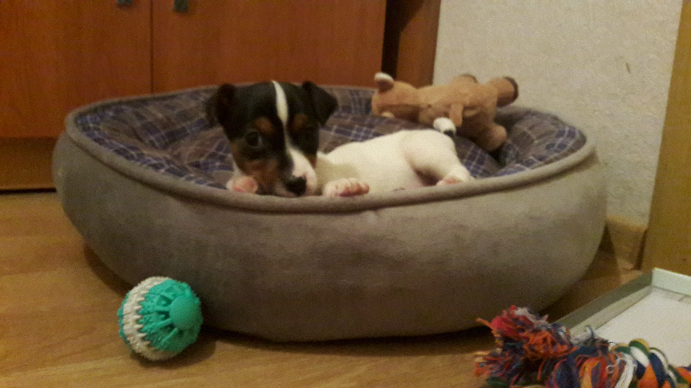
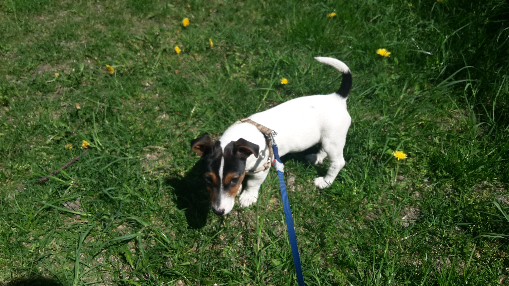

How to Get a New Bestie?
Home page
Before Getting a Dog
Adaptation
Pieces of Advice
Adaptation
Here is a cute creature running around your house and makes a mess. Now you are a happy owner of a cute and sweet puppy. Congratulations! But it is only the beginning of your joint journey. Be ready to keep calm. All the time. Yes, sometimes it could be very difficult, but it is really important. The puppy is much harder! Here are some pieces of advice which will help you and your new friend for adaptation.
• Be quiet and calm.
Don't express your feelings too emotionally
- it can scare a puppy who doesn't know you well. Don't touch him a lot and postpone "dogs showing" for your friends and neighbours. They also can become the reason for a puppy's anxiety.
• First few days he can whine and be afraid of anything, so
calm him taking on your hands and give him love
.
•
Give a puppy time to explore his "new home"
to get used to unknown smells and space. Furthermore, make sure of his safety and always look after him.


• The majority of puppy go to their new owner s during
the first night
. If you don't plan that the dog will always sleep in your bed, then show him your presence in other ways - lay something soft for him near your bed and caress during the night. It can continue a few weeks.
• Also, the first few weeks are the best
time to set new rules
: show the puppy his bowls, resting place, and toilet. Try walking your puppy over to the diaper when he starts sniffing or fidgeting.
•
Do not leave the puppy alone for a long time
(more than 4-5 hours). He may be scared and depressed.
•
Do not change your puppy's diet
(if possible). First, he needs to be given the same food he received from the breeder.
• Try to
visit veterinarian 3 days after
the puppy's transfer to the new house.
If you want to know some interesting pieces of advice based on my own xperience
click here